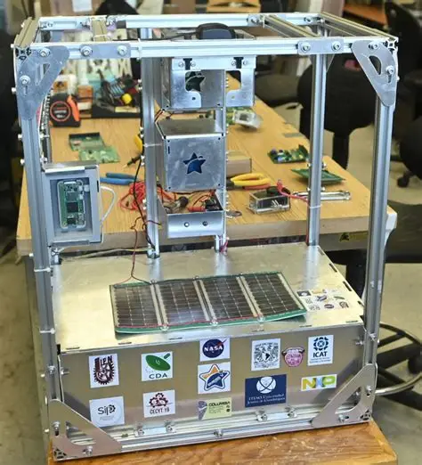
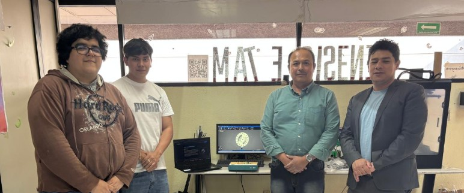
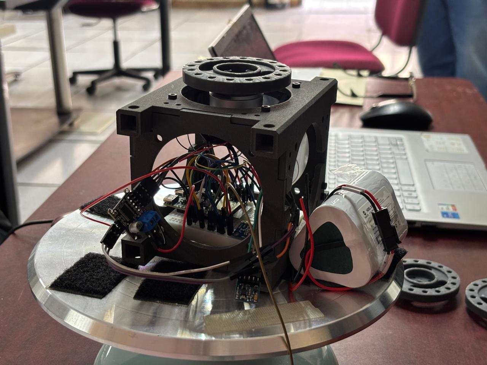
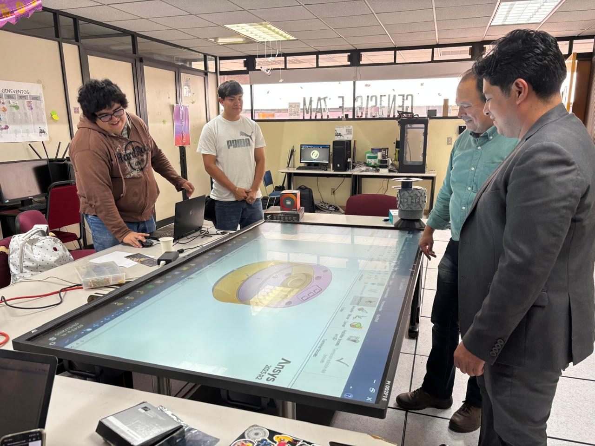
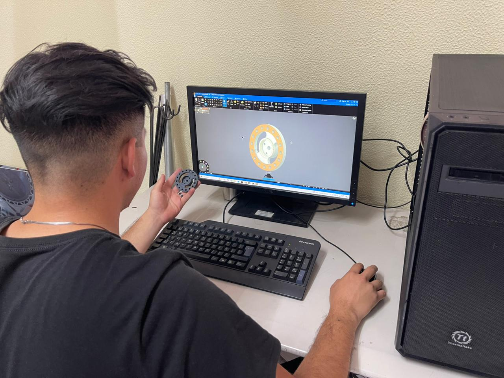
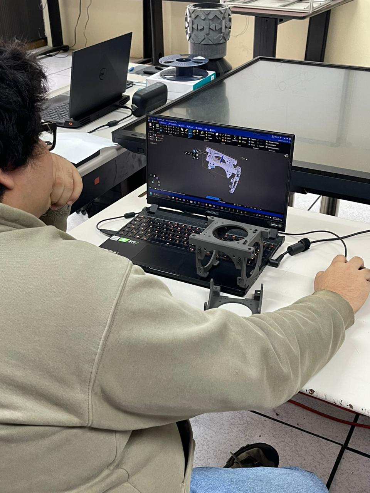
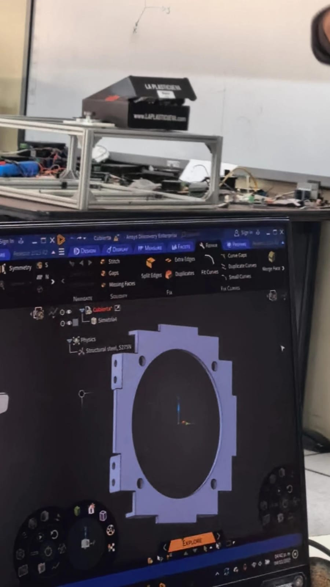
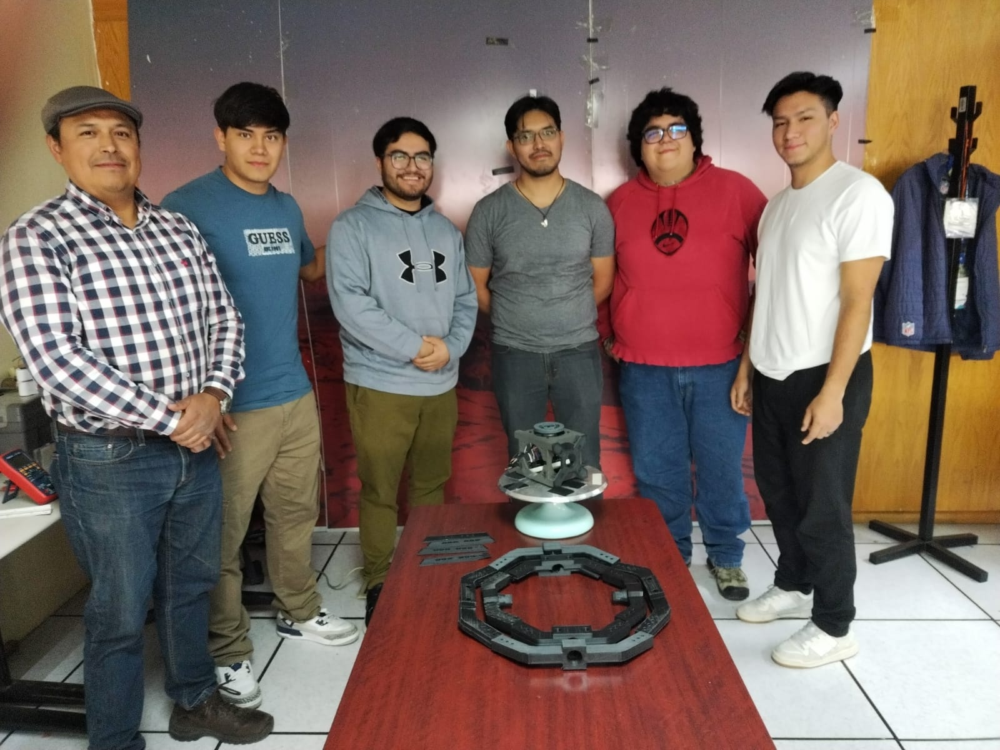

Avances Aeroespaciales en México
Avence en el desarrollo de satelites tipo CubeSat
Enero 29 2025
La NASA probó con éxito 2 módulos que fueron diseñados por la UNAM y el IPN respectivamente; viajaron sobre Nuevo México y la estratosfera de la Antártida respectivamente
Leer másIPN replica entrenamientos de astronautas de la NASA
Noviembre 23 2025
Los científicos politécnicos señalaron que el proyecto podría implementarse como una plataforma de entrenamiento integral y modular dirigida a agencias espaciales y empresas privadas de exploración espacial.
Leer másBitácora Aeroespacial
Justificación y Pilares Tecnológicos del CubeSat 1U
Contribución al Desarrollo Tecnológico Nacional
El proyecto nace de la necesidad de investigar, implementar y dejar registro de soluciones tecnológicas en el sector estratégico aeroespacial en México. A pesar de ser catalogado como país constructor y operador de satélites, existe **poca transparencia** en la tecnología de sistemas de control desarrollados localmente.
Propuesta: Diseñar un prototipo de estabilización y control de actitud para nanosatélites, integrando **filtros de Kalman optimizados** y sistemas de control basados en **ruedas inerciales**.
El proyecto busca dar continuidad a trabajos previos de simulación, enfocándose ahora en la implementación en hardware real para la formación de soluciones accesibles y de bajo costo.
Modos de Operación del Subsistema ADCS
El diseño del satélite contempla diferentes modos de operación del Subsistema de Control de Actitud (ADCS) para optimizar el consumo de energía y la precisión:
-
Fine-Point Mode (Modo de Apuntamiento Fino):
Modo de **máxima precisión** usando **Filtros de Kalman (EKF, UKF)** y control con ruedas de reacción. Es esencial para apuntar cámaras, telescopios o enlaces ópticos. (Consumo: Alto).
-
Detumble Mode (Desaturación Inicial):
Primer modo tras el despliegue. Usa **magnetómetros** y **magnetorquers** (algoritmo B-dot) para amortiguar las rotaciones y proteger el satélite. (Consumo: Bajo).
-
Safe Mode (Modo Seguro):
Activado ante anomalías o baja energía. Se apagan cargas útiles y se usa control simple para recibir comandos y mantener energía mínima. (Operación robusta).
Noticias del proyecto CubeSat de 1U
¡MOSSO en la casa!
03 Noviembre 2025 | Actividad: Mostrando resultados
El equipo GAE ha presentado oficialmente su nuevo prototipo, desarrollado en el departamento GENESIS, al director de la ESCOM, Iván Giovanny Mosso García. Esta demostración representa un paso decisivo y consolida el arranque de operaciones de nuestro grupo aeroespacial.
!Armando el CubeSat de 1u¡
02 Diciembre 2025 | Fase: Ensamblaje
Hemos estado trabajando duro para poder generar el ensamblaje completo del CubeSat 1U, integrando las piezas impresas en 3D con los componentes electrónicos y sistemas de control.
Adquisición de la pantalla de GENESIS
03 Diciembre 2025 | Actividad: Añadiendo equipo
Despues de una larga espera, nos han dado la entrega de la contraseña de la pantalla de GENESIS, la cual nos permitira presentar de una manera mas profesional y visual tanto nuestros avances en ansys como presentaciones futuras.
Computadora de abordo

03 Diciembre 2025 | Actividad: Mostrando Equipo
Durante la visita del director Iván Giovanny Mosso García, se hizo muestra de la computadora de abordo que se consigio para nuestro CubeSat 1U. Este equipo es crucial para las operaciones del satélite, permitiéndonos gestionar y controlar sus funciones en órbita.
Artículos Destacados
Guía para el desarrollo de misiones universitarias basadas en CubeSats
Leer másPróximos Eventos
- Sin fecha: Foto oficial con los profesores asociados a GAE
Uso y desarrollo de ANSYS
ANSYS ah sido un gran aliado para validar nuestros diseños de componentes aerodinámicos y estructurales, garantizando la máxima eficiencia y seguridad. Aquí puedes ver a nuestro equipo en acción, trabajando con modelos complejos y analizando resultados críticos. Agradecemos el apoyo a Ansys por brindarnos el uso de las licencias para el desarrollo de nuestros proyectos.

Análisis de flujo en tobera de propulsión.

Simulación estructural del chasis del CubeSat.

Revisión de dinámica de fluidos para alerones.
Grupo Aeroespacial Escom
¡Conocenos!
Somos un grupo conformado por apasionados del espacio y la tecnologia aeroespacial, dedicados a la investigación, desarrollo e innovación en el ámbito de los satélites y sistemas espaciales. Nuestro objetivo es fomentar el conocimiento y la aplicación de tecnologías avanzadas en ESCOM, contribuyendo al crecimiento del sector aeroespacial en el IPN.
A través de proyectos prácticos, colaboraciones académicas y participación en competencias internacionales, buscaremos inspirar a la próxima generación de ingenieros y posicionar a ESCOM como un referente en la educación y desarrollo tecnológico en el area Aeroespacial.

Integrantes que forman parte del "Grupo Aeroespacial Escom"